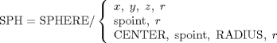

| 3.15. The Sphere (SPHERE) Definitions | ||
|---|---|---|
 | Chapter 3. Geometric Statements in APT |  |
| 3.15. The Sphere (SPHERE) Definitions | ||
|---|---|---|
| | Chapter 3. Geometric Statements in APT | |
A sphere is a surface such that all points on the surface are equidistant from a fixed point.

SPH = SPHERE/ CENTER, spoint, TANTO, splane
| |  | |
| 3.14. The Matrix (MATRIX) Definitions |  | 3.16. The Quadric (QADRIC) Definitions |
![[Note]](images/note.png)